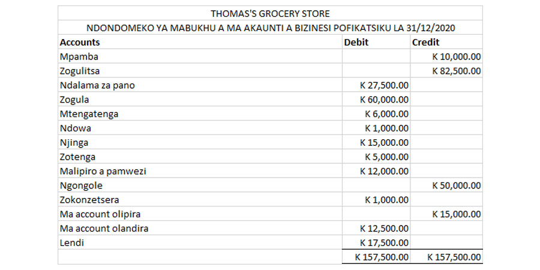

7.9 Exercise
The image above shows Thomas's trial balance at the end of the year.
Inventory left unsold at the end of the year amounted to K 20,000.
Rent amounting to K 2,500 was actually paid for January 2021.
Thomas has not yet paid salaries for December amounting to K 3,000.
A customer will not be able to repay the business for products bought on credit amounting to K 2,500.
Depreciation for the bicycle will be done using the reducing balance method at a rate of 10% per annum.
Depreciation for the bucket will be done using the straight line method. Thomas expects to use the bucket for two years and then throw it away and buy a new one.
Using the trial balance as at 31 December 2020, and the statements given, prepare Thomas's updated statement of profit or loss and statement of financial position.